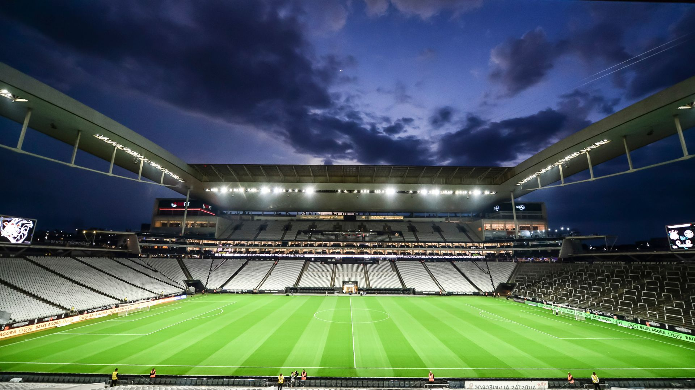
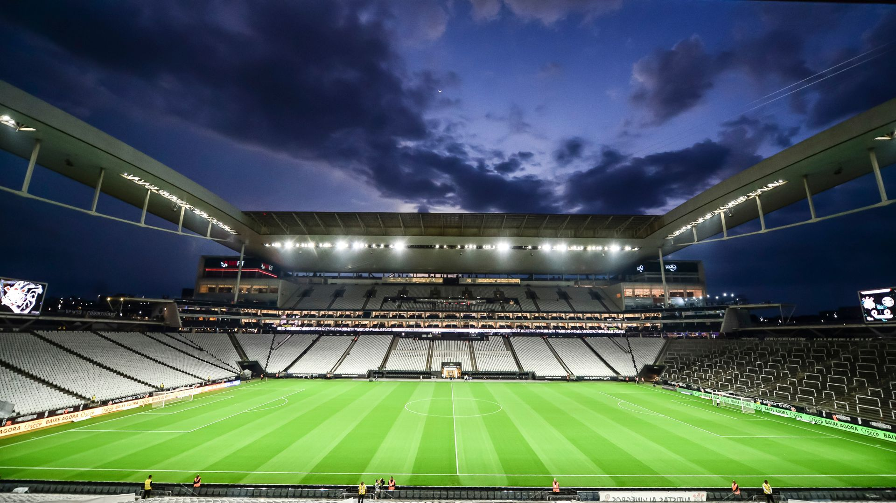

História do clube:
Em meados de 1910, mais aproximadamente no dia 1º de setembro, um grupo de trabalhadores e operários do bairro Bom Retiro, São Paulo, decidiram fundar o Sport Club Corinthians Paulista, se inspirando na equipe inglesa Corinthian-Casuals Football Club, que estavam de passagem pela cidade na época...


De 1910 para cá, o clube conquistou diversos títulos...
 

Títulos
Campeonato Paulista:
O Corinthians é o maior campeão paulista da história...


Campeonato Brasileiro
Com 7 títulos conquistados, o Corinthians é um dos maiores campeões...


Copa do Brasil
Um campeonato onde o Timão tem boas atuações...


Mundial de Clubes
Com dois títulos, o Corinthians é o maior campeão...


Libertadores da América
Mesmo com apenas um título, a campanha do Timão na edição do campeonato de 2012...